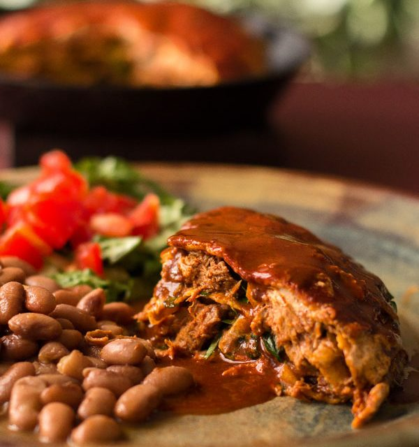
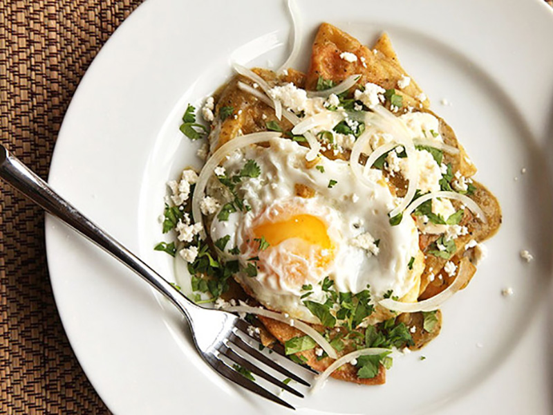

Starter Meals
Carne Adovada Enchilada

Ingredients
- 1 cup carne adovada, torn into small pieces
- 5-6 corn tortillas
- 1 cup red chile sauce (or sauce from the carne adovada)
- ½ bunch fresh spinach*, stems removed, leaves chopped
- ½ cup minced onion cheddar or Montery Jack cheese, grated sour cream (optional)
- 1 fried egg (over easy or sunny side up) per serving (optional)
Instructions
After assembling, there are two methods one could use for heating these enchiladas – microwave or oven.
1.For the microwave Assemble each serving of enchiladas on a microwave safe serving plate using 2 to 3 tortillas. Heat in the microwave on high for 2 minutes, remove, top with a fried egg, if desired, and serve.
2.For the oven Preheat the oven to 350º F. Assemble a multiple layer stack of enchiladas in a small cast iron skillet or oven safe dish using 4 to 6 tortillas.
3.Bake for 20 minutes. Cut into serving size pieces and top each serving with a fried egg and more red chile if desired.
4.Serve and enjoy! To assemble a layer of enchiladas, dip a corn tortilla in the red chile sauce (or carne adovada sauce) and place on the plate or skillet. Top with some of the spinach, carne adovada, minced onion, sour cream, and cheese or whatever
you want to add. Dip another corn tortilla in the red chile and place on top of the first stack. Assemble a second layer. Continue stacking until you have the desired number of layers. Top the last tortilla with cheese if desired. Microwave or bake.
Serve with or without an egg, extra red chile, and a side of pinto beans.
Chilaquiles Verdes With Fried Eggs

Ingredients
- 2 quarts vegetable, canola, or peanut oil
- 16 soft corn tortillas, cut into 6 wedges each Kosher salt
- 2 cups Salsa Verde
- 1 cup homemade or store-bought low sodium chicken broth or water
- 4 eggs
- 1/2 cup Mexican crema or sour cream
- 1/2 small white onion, thinly sliced
- 1/4 cup chopped fresh cilantro leaves
- 1/4 cup crumbled cotija cheese
Instructions
1.Heat vegetable oil to 375°F in a large wok, Dutch oven, or deep fryer. Adjust flame to maintain temperature. Line a large rimmed baking sheet with paper towels. Fry 1/3 of tortilla wedges, using a metal spider to agitate them as they cook. Cook until
bubbling slows to a trickle, chips are pale golden brown, and are very crisp, about 3 minutes. Transfer to the baking sheet and immediately season with kosher salt. Repeat with remaining batches.
2.Heat Salsa Verde and chicken broth (or water, if using) in a large straight-sided sauté over medium heat until simmering. Add chips and turn to coat. Cover and set aside.
3.Transfer 2 tablespoons of oil to a large non-stick or cast iron skillet. Heat over medium-high heat until shimmering. Add four eggs and cook until whites are set but yolks are still runny, about 3 minutes. Season with salt. Transfer to a large
plate.
4.Stir tortilla chips again and season to taste with salt if necessary. Divide between four warmed serving plates. Top each with a fried egg. Drizzle with crema, sprinkle with onions, cilantro, and cheese, and serve immediately